mp_toxic
2021
mp_dark_final
2020
mp_mody_v4
2019
Overview
The fourth entry in HaMoDy's well-known Mody-series. Jump through futuristic structures as you progress from one building to another. A modern and clean looking map that is aimed towards more experienced players.
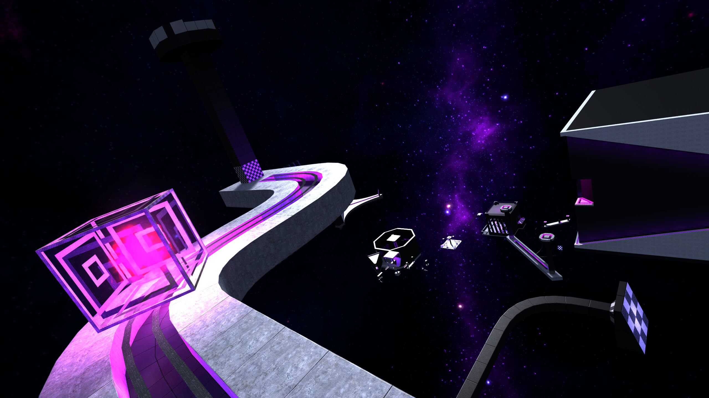Background
This map was started sometime during 2016-2017 by HaMoDy, the original creator of the Mody-series, but for an unknown reason it was left unfinished at the time. A fairly big chunk of the map was done before it was left on ice for over a year. This included most of the easy and intermediate ways. Later HaMoDy decided to move on from mapping, so he sent the project to another mapper named toXijeE, hoping him or someone else would continue the remaining hard way from where he left off.
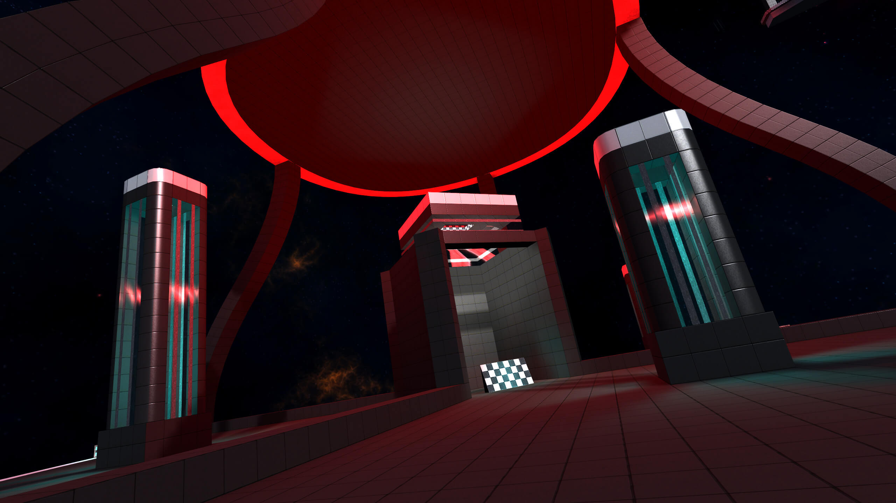At the time, toXijeE was working on his own maps, and because of that was unable to make any real progress. In 2018 I had just finished working on mp_sierra during the summer, and didn’t really feel like starting a brand new project so soon after just having finished a massive map. Being still very much interested in mapping though, and having learned so much from the creation of mp_sierra, mp_mody_v4 felt like the perfect project to scratch my mapping itch without committing into something too big that would take me years to finish.
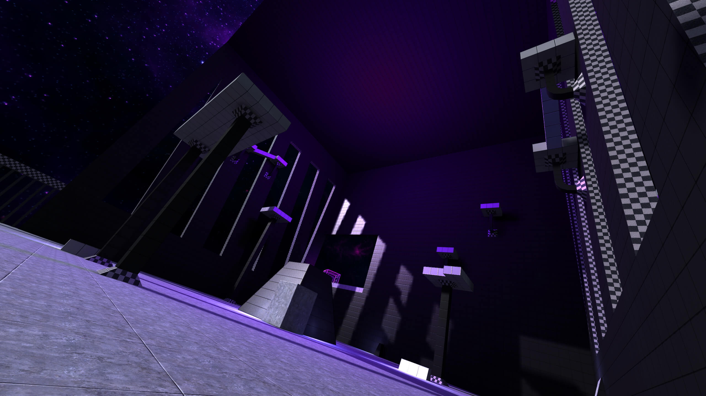The work began in late 2018 and would take around 4-5 months, resulting in the map being released on the 29th of March in 2019. Most of those 4-5 months went into finishing the hard way, which ended up being based around the already mostly finished easy and intermediate ways. I used the rooms made for those ways as a base and then modified each jump in some way to make the way feel harder and different in comparison. I also made heavy changes to both easy and intermediate ways, because they had become quite outdated in quality and balance when compared to the hard way. A small facelift was necessary, so I ended up spending a fair bit of time in cleaning those ways as well. In addition to that I added a few secrets and a freeroam area at the end of the map just to add a bit more variety.
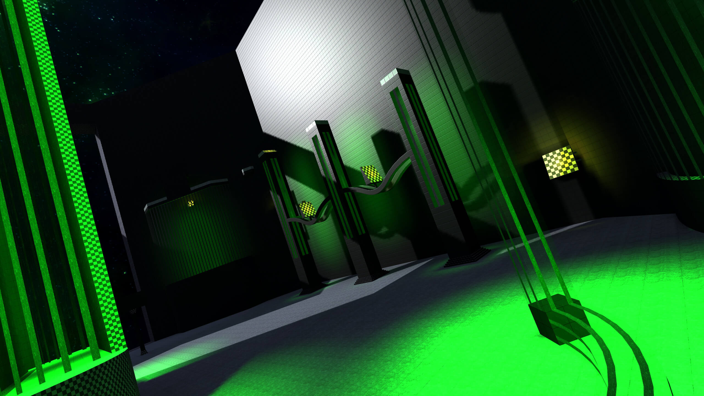Visuals
In terms of visuals and design, I really wanted to evolve the look of the Mody-series further. I refined a lot of the texture and light work already done by HaMoDy across the entire map to make the overall presentation look cleaner. I added different-colour custom skyboxes for each way that toXijeE had planned to add. I also made custom effects to some areas and started using a lot more prefabs and curve/terrain patches to give a small twist on the classic Mody-design.
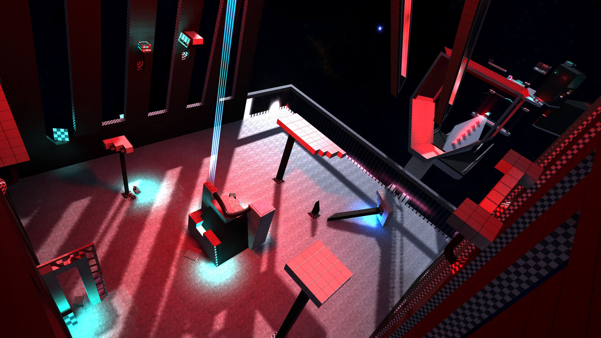The older Mody maps were very structural, clean and symmetrical in the design where as with this map I wanted to introduce a bit more chaos to the design while still keeping those core elements of the series intact. I modified the design to have broken down areas as well as rotated and offset platforms. This gave the map a bit more of a natural and imperfect feeling, and allowed me to be a bit more creative with the jumps as well.
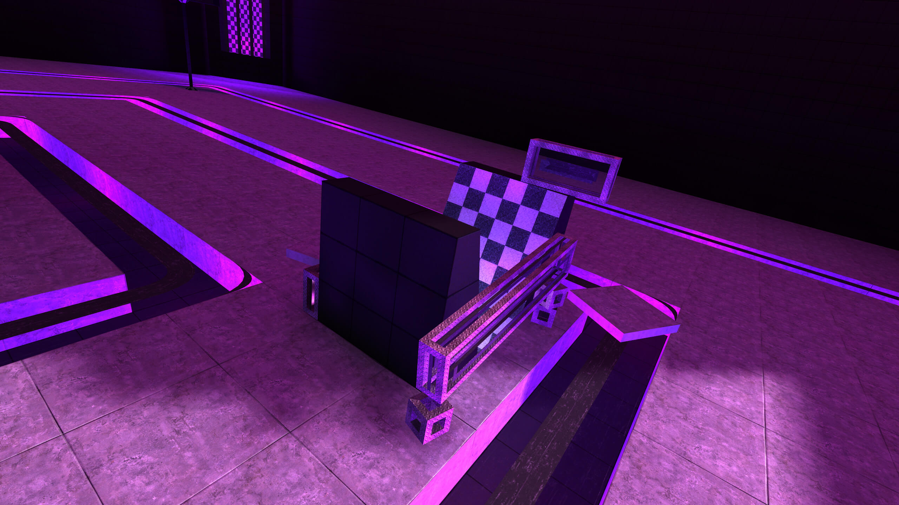Gameplay
The difficulty of the map is fairly hard, being around 15/20 on the hard route. It is quite long and challenging having some really tough norpgs, but if you just want to get through it, most of the map is quite easily doable with the right techs and timings. It is a very forgiving map, but the length and unfamiliarity of the techs needed might make it seem harder than it actually is.
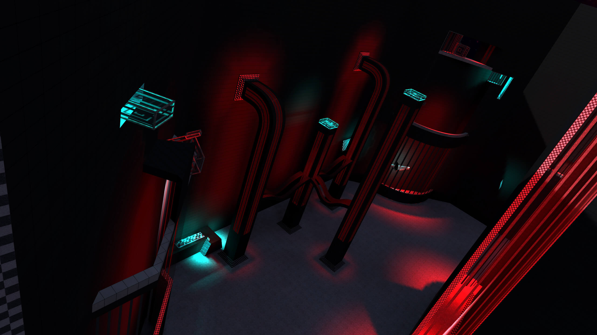The easy and intermediate ways are also very challenging when compared to other maps/ways of similar level. They serve as good transition routes for moving up in a way category. The easy route for example is an excellent route to start with when you want to start going into intermediate territory. The same applies to the intermediate route when starting to go for hard routes.
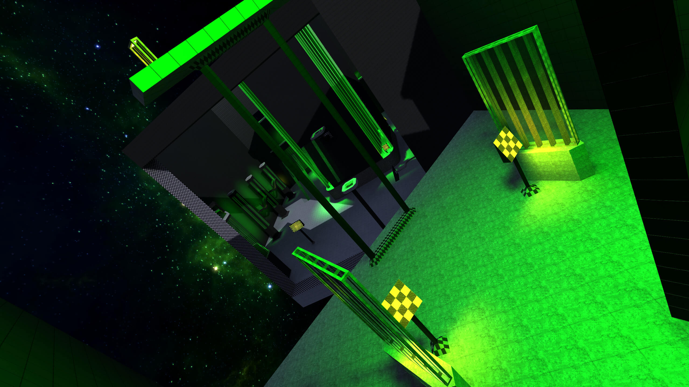As mentioned before, there also exists a small freeroam area at the ending room, that can be accessed from spawn with a secret route or by completing any of the main routes. This area wasn't really meant to be anything more than a gimmick, but it does provide different kind of experience compared to the normal ways. There's many interesting bounces and alot of fun can be had with trying to find the way to the top without using any RPGs.
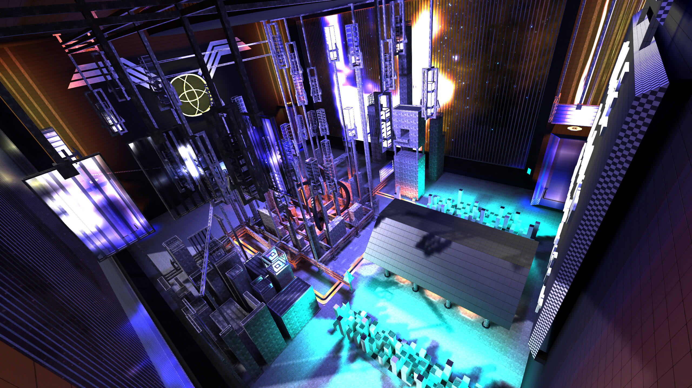Credits
While the map is credited to being created by HaMoDy and me, we got a lot of help from other people in the community during the mapping process. Skazy and toXijeE helped with the mapping and skyboxes a lot. $ilver $urfer and NoobAim did some of the early testing and should also be credited. Noob also helped with some scripting challenges at the very end.
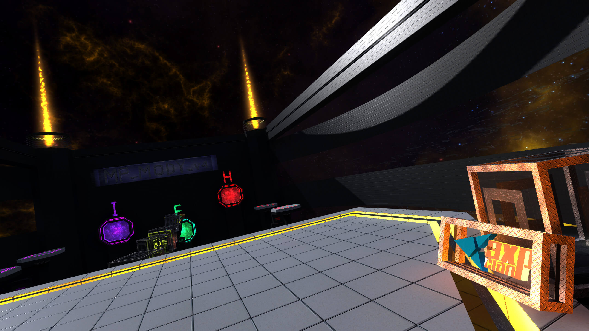2021 "Remaster" Update
Over the past two years, a lot of different issues surfaced that I didn't really feel like were worth fixing on their own. With speedrunning becoming much more popular, and many servers having leaderboards I felt like it was important to fix these issues finally in an attempt to future proof the map. My original goal was to just fix the most critical exploits such as elevators, but I also fixed many of the mapping errors both me and HaMoDy had made at the time. With me becoming a lot better mapper in the past two years, I was much better at being able to spot and fix the issues with the mapping, that I previously had to ignore because of inexperience. I also improved many core aspects of the map, like lighting and performance even though those weren't really issues to begin with. I still felt that was worth to do, because I had the ability to improve those aspects even more and it directly made the map better without drastically changing the gameplay experience.
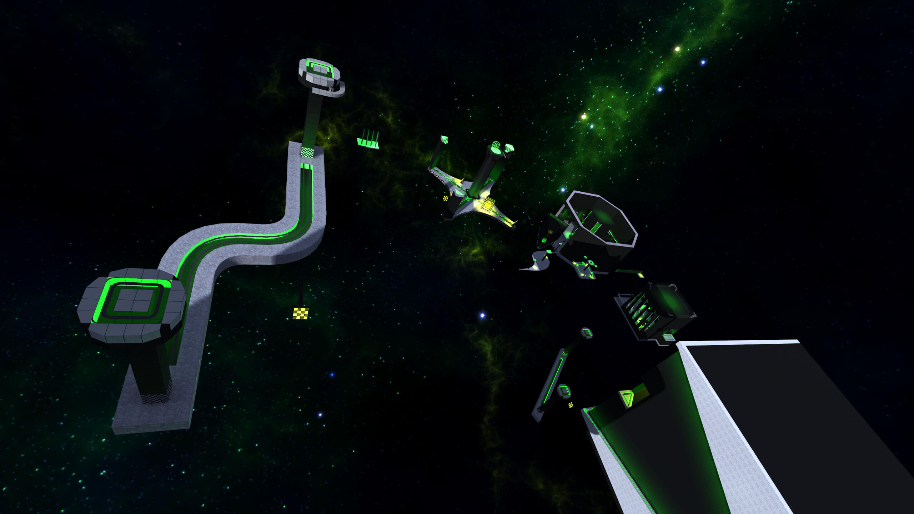This update brings a version of the map with no compromises, being pretty close to what I always wanted it to be. I haven't touched the core gameplay aside from 2-3 bounces which required me to do so, though I would be surprised if most people can even notice them. Many of the enhancements are under the hood, but there's a few visual changes some might notice which will hopefully be a nice surprise for returning players. Huge thank you to Hoopik, Trickshot, Baxter and Glitcher for their help with fixing the exploits.
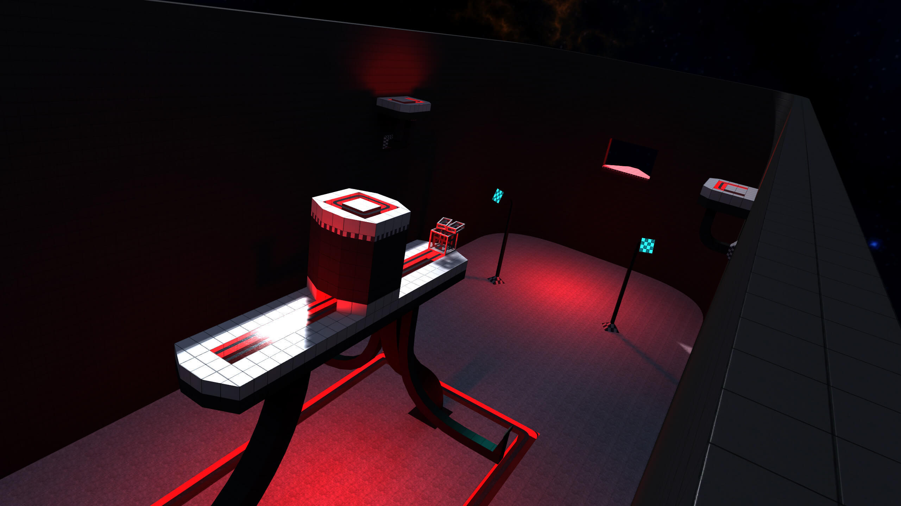Walkthroughs
Easy way walkthrough, performed and edited by Xploz.
Hard way walkthrough, performed by Sardonyx, edited by Funk.